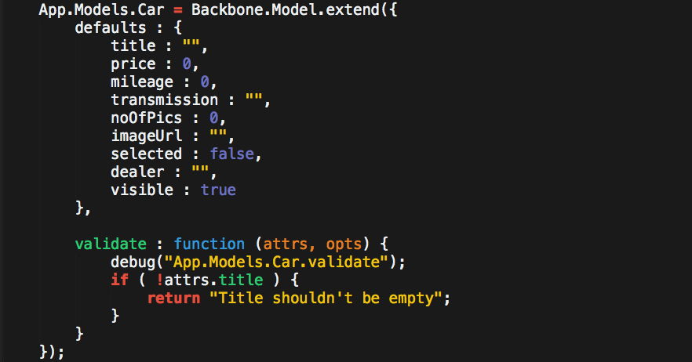

"Backbone aplikacija" je web aplikacija struktuirana na način koji je predstavljen u backbone.js bibilioteci. To je MV* arhitektura.
Aplikaciju čine tri dela: Manipulacija DOM-a, Pomoćne funkcije (operacije sa objektima, operacije nad nizovima, ...) i Backbone.js bibilioteka koja određuje strukturu cele aplikacije.
jQuery (ili neka druga srodna bibilioteka) služi da manipuliše DOM-om, jQuery je preporučen od strane Backbone-a, i cela komunikacija sa HTML dokumentom se odvija preko jQuery-a.
Najčešće korištene "utility" biblioteke, Underscore.js i Lodash.js nude funkcionalnosti koje Backbone koristi interno, ali koje su potrebne i korisnicima za lakši razvoj aplikacije.
Underscore.js je "hard-dependency" za Backbone.js pa mora biti učitan pre backbone.js fajla. Takođe, ukoliko naša aplikacija koristi jQuery ili neku srodnu bibilioteku (a najverovatnije hoće), i ta biblioteka mora biti učitana pre Backbone-a.
Glavne beneficije koje Backbone nudi su visok stepen fleksibilnosti u načinu razvoja aplikacije, precizna organizacija koda (što nam omogućava efikasnije dodavanje novih funkcionalnosti i izmene postojećih) i kontrola svih delova aplikacije (nema mnogo "magije").
Pored svega ovoga, Backbone je samo Javascript bibilioteka, a ne frejmvork jer korisnika ne forsira da koristi ponuđene funkcionalnosti striktno "po receptu".
Aplikacija je sastavljena od jednog ili više modela, kolekcija, pogleda i rutera. Ti delovi međusobno komuniciraju i omogućavaju razne funkcionalnosti.
Ovi delovi su objekti sa predefinisanim atributima (od kojih su neki inicijalno definisani prazni), koje kada predefinišemo menjamo njihovo podrazumevano ponašanje (proširujemo funkcionalnosti).
Pošto je neophodna međusobna komunikacija između različitih instanci od Backbone.View, Backbone.Model, Backbone.Collection i Backbone.Router potrebno je omogućiti njihovu međusobnu "vidljivost". Ne želimo da "prljamo" prostor globalnih varijabli sa više promenjivih iz aplikacije, pa je dobra praksa sve globalne promenjive potrebne za našu aplikaciju smestiti u jedan globalni objekat, a različite sekcije aplikacije u različite atribute tog objekta.
Npr ovako:
Ako aplikaciju pišemo unutar jednog IIFE modula ovakav "namespacing" nije neophodan, ali ne može da škodi - imamo jasan pregled na šta se odnosi bilo koja varijabla. U ostalim slučajevima je izuzetno koristan.
Backbone.Model opisuje formu u kojoj se nalazi neki podatak unutar aplikacije, ili model iz realnog života. Npr. model automobila bi sadržao glavne podatke o automobilu: model, godište, potrošnja...
Običan Javascript objekat je takođe jedan model, a Backbone.Model uz sve to nudi funkcionalnosti koje se skoro uvek koriste. Npr. često čitamo vrednosti modela, ili menjamo neke atribute (za to su definisane funkcije get() i set() ), proveravamo validnost vrednosti atributa modela ( validate() ), dalje, ukoliko je potrebno dovući podatke sa mreže, metode za učitavanje podataka u model ( fetch() ).
Moguće je i postaviti podrazumevane vrednosti za atribute modela, što definišemo u defaults objektu. Osim ovih, postoji još veliki broj mogućnosti koje nudi Backbone.Model, a sve su opisane u Backbone dokumentaciji (http://backbonejs.org/#Model).
Primer definicije jednog Backbone modela:

Kada se instancira Backbone.Model (npr var Knjiga = new Backbone.Model.extend({
defaults: {
author: "Unknown",
bookTitle: "Blank"
}
});
var model = new Knjiga(); ) automatski se pozove initialize() metod iz Backbone.Model, i kao parametre primi ono što je prosleđeno konstruktoru. Međutim, argumenti initialize() nisu obavezni, ali mogu biti korisni u nekim situacijama - da kontruišemo model na različite načine pomoću promene parametara kontruktora (kao Facade patern). initialize() metod je dostupan i u drugim Backbone objektima.
Kada smo, u primeru iznad, izveli (nasledili) jedan View objekat iz Backbone.View objekta koristili smo funkciju extend() koja potiče iz Underscore.js (ili Lodash.js).
Backbone kolekcija je uređen skup modela. Npr. ako imamo model Automobil = Backbone.Model; onda možemo imati kolekciju Automobili = Backbone.Collection({ model : Automobil }); Najčešće koristimo kolekcije čiji su svi modeli istog tipa, ali takvo ograničenje ne postoji.
Ukoliko apstraktnije posmatramo Backbone kolekciju, vidimo da je to niz objekata sa pomoćnim metodama koje nam omogućavaju manipulaciju, npr. sortiranje ( sort() ), filtriranje ( filter() ), izmene pojedinih objekata, dodavanje objekata u kolekciju ( add() ), brisanje ( remove() ), kao i operacije za popunjavanje kolekcije podacima sa mreže ( fetch() ), itd.
Kolekcije i modeli igraju veoma važnu ulogu u (možda) najbitnijem delu aplikacije, View-u, jer se u njima nalaze svi podaci koji će biti predstavljeni korisniku. Posledica većeg dela korisnikovih akcija će rezultovati promene modela i kolekcija u aplikaciji.
U funkciji Backbone.sync je definisan način na koji će se podaci iz modela (kolekcija) slati na server, i ukoliko treba da napravimo neke izmene u odnosu na podrazumevani način komunikacije potrebno je da predefinišemo tu funkciju. Ovu funkciju interno koriste metodi fetch() iz modela i kolekcije.
Unutar Backbone.Collection objekta raspolazemo sa metodama initialize() [prazan], toJSON(options) [mapira toJSON(options) iz Backbone.Model], sync() [Backbone.sync], add(models, options), remove(models, options), set(model, options), reset(models, options), push(models, options), pop(options), unshift(model, option) [dodaje model na početak], shift(options) [skida model sa početka kolekcije], slice(), get(obj), at(index), where(attrs, first), findWhere(attrs), sort(options), pluck(attrs), fetch(options), create(models, options), parse(resp, options) [return resp], clone(), modelId(attrs). itd.
Backbone.Model, Backbone.Collection i Backbone.Router su unutar Backbone biblioteke fizički odvojeni, ali čine jednu celinu - deo aplikacije koji se bavi podacima.
Osnovna svrha instanci Backbone.View objekta je da prikažu podatke sačuvane u modelima i kolekcijama, ili podatke nastale tokom izvršavanja aplikacije. Pored toga, Backbone.View ima zadatak da osluškuje događaje, i na njih adekvatno reaguje.
Kao i drugi Backbone objekti, i Backbone.View ima više atributa koje možemo predefinisati.
Prvi od njih je el atribut, čija je vrednost DOM reprezentacija objekta kojim upravlja taj View (pored el često pristupamo $el atributu koji se interno pravi i to jQuery objekat napravljen od el - $(el)). Kada se kaže da View kontroliše (upravlja) neki DOM element, misli se da View ima mehanizme da menja taj element, da osluškuje njegove događaje, da ga sakrije, prikaže, obriše, itd.
Primer jednog Backbone.View objekta:
Dakle, ovde je SearchView "prikačen" za $('#search_container') DOM element, i taj element popunjava sadržajem po uzoru na templejt koji se nalazi u $('#search_template').
U prethodnom primeru smo videli da u jednom redu piše: var template = _.template( $("#search_template").html(), {} );
Na prvi pogled deluje nejasno, al zapravo je prilično jednostavno. Radi se o template() funkciji iz Underscore.js biblioteke (http://underscorejs.org/#template). Prvi parametar je string (HTML sadržaj) koji, opciono, može da zavisi od nekih promenjivih. Drugi parametar je objekat koji sadrži vrednosti promenjivih da se HTML element kompletira. U prethodnom slučaju nije bilo promenjivih, pa je zato prosleđeni objekat prazan. Istini za volju, var template = _.template( $("#search_template").html(), {} ); je kao da smo pozvali var template = $("#search_template").html();.
Primer: Kako može da izgleda neki element napravljem pomoću šablona (templejta) sa različitim podacima.
Često je zgodno napraviti pomoćnu template( element ) funkciju, da bismo imali lepši zapis prevođenja templejta.
Ovoj funkciji je potrebno proslediti samo id HTML elementa u kojem se nalazi templejt, a kao rezultat dobićemo funkciju koja prima objekat (u obliku key:value) sa promenjivim potrebnim da se dobije konačan HTML element.
Metod koji ćemo vrlo često hteti da predefinišemo (jer je skoro prazan) je render(). Po konvenciji taj metod vraća this, a služi da DOM element popunimo sadržajem. Metod render() ćemo pozvati kada želimo da apdejtujemo sadržaj, to može biti relativno često, pa nije poželjno da unutar tog metoda imamo neku kompleksnu logiku - ukoliko je tu kompleksna logika, nešto radite pogrešno.
initialize() metod se poziva kada se kreira nova instanca tog objekta, isto kao kod Modela i Kolekcije.
Treba primetiti se unutar nekog View objekta vide svi DOM elementi na stranici, ne samo onaj kojim upravlja taj View. To ne iznenađuje jer ne postoji poseban mehanizam enkapsulacije, a osim toga Backbone ima pristup jQuery objektu, jQuery celom DOM drvetu, tako da je jasno zašto je tako.
Zbog toga je lako upasti u zamke prilikom pisanja aplikacije, koje će dovesti do upotrebe anti-paterna. Npr. situacija kada View pristupa DOM elementima na stranici za koje nije odgovoran je jedan anti-patern, jer suština postojanja View objekta je da se različitim delovima aplikacije dodele različiti objekti koji će da kotrolišu odgovarajuće delove.
Unutar Backbone.View objekta raspolažemo sa metodama: $(selector) [to je zapravo $.find() unutar instance View], initialize() [prazan], render() [samo return this;], remove() [$.remove i stopListening], setElement(element), delegateEvents(events), delegate(eventName, selector, listener), undelegateEvents(), undelegate(eventName, selector, listener)
Vidimo da unutar Veiw objekta imamo dosta metoda koje osim što se bave DOM strukturom stranice, upravljaju i događajima. Događaje (event, eventListener)
teško da možemo logički razdvojiti od izgleda (prikaza i UX) aplikacije. Većina elemenata na stranici treba da ponudi interaktivnost sa korisnikom, pa je reagovanje da korisnikove akcije sastavi deo View infrastrukture.
Događaji se definišu unutar Backbone.View objekta u events atributu, koji sadrži uređene parove 'događaj':'akcijaNaDogađaj'. Na primer:
Backbone.Events pruža sličan interfejs kao i jQuery za rad sa događajima. Bitno je obratiti pažnju da kada se neki element uklanja iz Backbone.View objekta da li se istovremeno uklanja i eventListener za taj događajaj. Preporuka je koristiti metod listenTo umesto on. Tako kada treba ukloniti neki View (element iz DOMa) pored this.$el.remove(); treba pozvati i Backbone.View.undelegateEvents.call(this).
Backbone.Router povezuje određene URL adrese unutar aplikacije i oglašava događaje kada dođe do promene adrese. Dalje, te događaje možemo da povežemo sa adekvatnim akcijama. Praktično, to može da izgleda ovako:
Pored očigledne mogućnosti da različitim delovima aplikacije pristupamo preko URL adrese i da na osnovu parametara adrese dobijamo potrebne informacije,
sa pozicije developera, Router pomaže da (potencijalno veliku) aplikaciju razbijemo na manje celine preko različitih adresa, a zatim delove aplikacije razvijamo nezavisno od ostatka.
Unutar Backbone.Router objekta od koristi su funkcije navigate() [pomoću koje menjamo trenutnu adresu brauzera (logički gledano, to znači da prelazimo iz jednog dela aplikacije u drugi). Takav poziv se najčešće nalazi unutar nekog eventHandler-a koji treba promeni trenutni pogled aplikacije.], dalje imamo execute(), kao i initialize().
Backbone.History je objekat koji služi za upravljanje istorijom brauzera, praćenjem promena ruta (route), itd...
Sadrži veći broj metoda i atributa o kojima sada neće biti reči. Značajan nam je metod start() koji pokreće praćenje hash promena u brauzeru, praktično omogućava da se na hash-promenu rute ispali događaj.